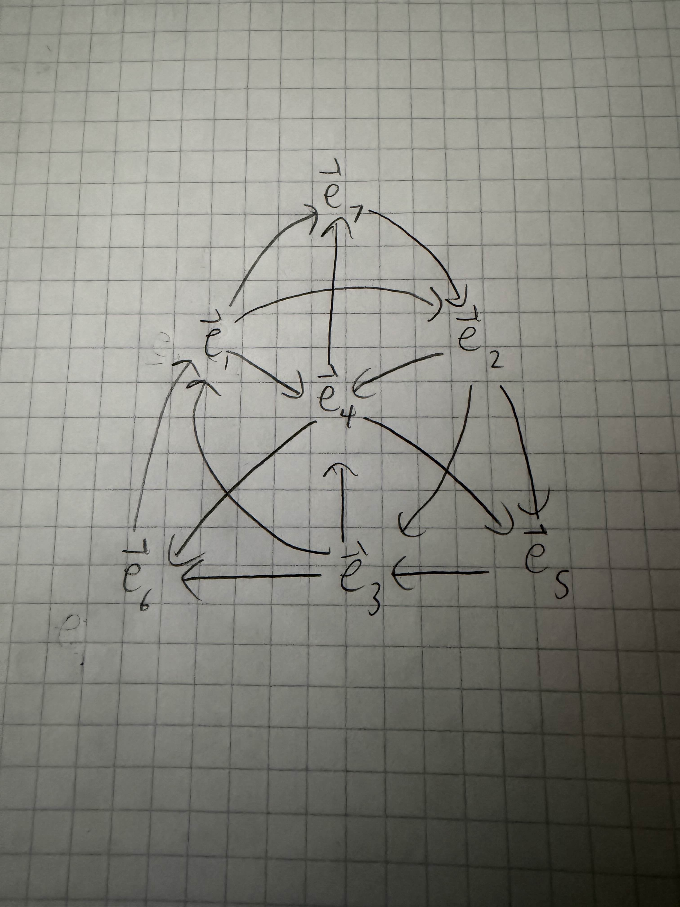

7th Dimensional Cross Products
We are all too familiar with the idea of a cross product, taking the cross product of two vectors results in a new vector orthogonal to both original vectors. Generally we first see this idea in Calculus III or Vector Calculus since after all the cross product is an operation only involving vectors. But, usually when we talk about cross products we refer to how we use them in 3-d after all, we live in a 3-dimensional world so generally we only care about up to 3 dimensions. However, once we define some rules about cross products we can find that we can use them in 7-dimensional computations.
We can start by defining the vectors that we will be using throughout the rest of the paper. We use $\vec{e_n}$ to denote the n-th column of the identity matrix of size m, where m is the amount of dimensions. For example, here are $\vec{e_3}$ and $\vec{e_5}$ in the 3rd and 7th dimension respectively. \[ \vec{e_3}= \begin{pmatrix} 0\\0\\1 \end{pmatrix}, \vec{e_5}= \begin{pmatrix} 0\\0\\0\\0\\1\\0\\0 \end{pmatrix} \] Next, we can outline the properties of cross products. In no particular order, the first is skew-symmetry, meaning that \[ \vec{a}\times\vec{b}=-\vec{b} \times\vec{a}. \] We also have that the cross product is bilinear, which is really two properties \[ \vec{a}\times(\vec{b}+\vec{c})=\vec{a}\times\vec{b}+\vec{a}\times\vec{c} \] and \[ (d\vec{a})\times\vec{b}=d(\vec{a}\times\vec{b}) \] where d is some scalar. Also, we must have that the cross product results in a vector orthogonal to both vectors in the cross product, \[ \vec{a}\cdot(\vec{a}\times\vec{b})=0 \] \[ \vec{b}\cdot(\vec{a}\times\vec{b})=0 \] As well as a vector crossed with itself is the 0 vector \[ \vec{a}\times\vec{a}=0 \] and by combining this fact with the second part of bilinearity, we also get that the cross product of parallel vectors is 0. Finally, we have that the cross product of two unit vectors, results in another unit vector (note that $\vec{e_n}$ as defined before is always a unit vector).
Let's start by thinking about smaller dimensions rather than larger ones and work our way up. Consider a 1-dimensional space, which is really just a straight line, for which we have only one basis vector in this space, $\vec{e_1}$. This means that every vector in the first dimension is some multiple of this basis vector, furthermore every vector is parallel to each other in the first dimension. By our cross product properties, every 1-dimensional cross product would just end up being 0 since every vector is parallel.
Now consider a 2-dimensional space (a plane), which means we now have 2 orthonormal basis vectors $\vec{e_1}$ and $\vec{e_2}$. The result of $\vec{e_1}\times\vec{e_2}$ cannot be $\vec{e_1}$ or $\vec{e_2}$ since the result must be orthogonal to both of those vectors, which is only satisfied by the 0 vector. By our skew-symmetry property $\vec{e_2}\times\vec{e_1}=0$. And since cross a vector with itself is 0, we have that any cross product in a 2-dimensional space is the 0 vector.
The 3-dimensional cross-product is the one we are most familiar with, we've been using it in class, and we live in a 3-dimensional world. This cross product can be modeled by the following table (read as row $\times$ column) \[ \begin{array}{ |c|c|c|c| } \hline \times&\vec{e_1}&\vec{e_2}&\vec{e_3}\\ \hline \vec{e_1}&0&\vec{e_3}&-\vec{e_2}\\ \hline \vec{e_2}&-\vec{e_3}&0&\vec{e_1}\\ \hline \vec{e_3}&\vec{e_2}&-\vec{e_1}&0\\ \hline \end{array} \] As we start getting into higher dimensions, finding every cross product becomes exponentially more and more tedious to do by exhaustion. But, there are a couple key things we can notice about this table that we can use to more easily show which dimensions cross products are or are not possible in.
So, what can we notice about the table? Probably the first thing to note is that there are 0's on the diagonal, this makes sense because the diagonal represents a vector crossed with itself which should be 0. So any table that we can think of should always have 0's along the diagonal. The second thing to note is that the table is skew-symmetric, this also makes sense since one of our cross-product properties is that they should be skew-symmetric. The last thing to note is akin to the Sudoku Property for Groups in Abstract Algebra. Essentially what this means is that for any row or column in the table, each possible entry can only occur once (ignoring negative signs).
To disprove cross-products existing in 4-6 dimensional spaces it is incredibly hard to imagine a space of higher dimension than 3, so instead we can consider adding a new row and column to the table for each higher dimension. Recall that every $\vec{e_{n_1}}$ is orthogonal to every other $\vec{e_{n_2}}$ for every $n_1\neq n_2$. In the 4th dimension we run into a problem immediately when we try to do $\vec{e_1}\times\vec{e_4}$ since by our Sudoku Property there is no vector we can use that has not already appeared in the same column or row. Continuing on to 5 dimensions, we once again imagine now we have 2 extra rows and columns. Now we can say $\vec{e_1}\times\vec{e_4}=\vec{e_5}$ as well as $\vec{e_1}\times\vec{e_5}=\vec{-e_4}$. The problem now comes when we try to do $\vec{e_2}\times\vec{e_4}$, once again by our Sudoku Property helps us see that there is no vector in our basis that is not already in the same column or row. And with 6 dimensions we run into the same problem we did with 4 dimensions where $\vec{e_1}\times\vec{e_6}$ has no possible vector to be equal to. More generally, we can say that we will run into this issue of $\vec{e_1}\times\vec{e_m}$ having no possible value whenever we are in an m-dimensional region and m is even.
Finally, for a 7-dimensional space, we can use the same strategy that we tried for dimensions 4-6, but this time it will actually work, \[ \begin{array}{ |c|c|c|c|c|c|c|c| } \hline \times&\vec{e_1}&\vec{e_2}&\vec{e_3}&\vec{e_4}&\vec{e_5}&\vec{e_6}&\vec{e_7}\\ \hline \vec{e_1}&0&\vec{e_3}&-\vec{e_2}&\vec{e_5}&\vec-{e_4}&-\vec{e_7}&\vec{e_6}\\ \hline \vec{e_2}&-\vec{e_3}&0&\vec{e_1}&\vec{e_6}&\vec{e_7}&-\vec{e_4}&-\vec{e_5}\\ \hline \vec{e_3}&\vec{e_2}&-\vec{e_1}&0&\vec{e_7}&-\vec{e_6}&\vec{e_5}&-\vec{e_4}\\ \hline \vec{e_4}&-\vec{e_5}&-\vec{e_6}&-\vec{e_7}&0&\vec{e_1}&\vec{e_2}&\vec{e_3}\\ \hline \vec{e_5}&\vec{e_4}&-\vec{e_7}&\vec{e_6}&-\vec{e_1}&0&-\vec{e_3}&\vec{e_2}\\ \hline \vec{e_6}&\vec{e_7}&\vec{e_4}&-\vec{e_5}&-\vec{e_2}&\vec{e_3}&0&-\vec{e_1}\\ \hline \vec{e_7}&-\vec{e_6}&\vec{e_5}&\vec{e_4}&-\vec{e_3}&-\vec{e_2}&\vec{e_1}&0\\ \hline \end{array} \] Probably the first question to ask is what is the logic behind where the negative signs are or are not? It comes from what is known as the Levi-Civita symbol denoted by $\varepsilon_{ijk}$, where for any cross product we have \[ \vec{e_i}\times\vec{e_j}=\varepsilon_{ijk}\vec{e_k}. \] For those of you also in MAT 4440, we have seen this symbol before and know that it is 1 if $(ijk)$ is a cyclic permutation of $(123)$, -1 if $(ijk)$ is a cyclic permutation of $(321)$, and 0 if any of i=j, i=k, or j=k is true. However, since we are in higher dimensions we need to define it more generally, for this we use some ideas from the symmetric groups from abstract algebra. For higher dimensions, the Levi-Civita symbol is 1 if $(ijk)$ is an even permutation of $(12\dots n)$, -1 if $(ijk)$ is an odd permutation of $(12\dots n)$, and still 0 if any of the indices are the same.
There is one more idea we need to notice before we start showing that we cannot have cross products in dimensions higher than 7. In order to even fill out the table while trying to preserve all the properties, we need to add 4 orthogonal vectors to on top of our 3 orthogonal vectors. So, if we were to try and go higher than 7, we would need 8 more orthogonal vectors. We will call this 8 vector space, the orthogonal complement of our 7 vector space that we currently have for $\mathbb{R}^7$. Let $\vec{a}$ be a vector in our $\mathbb{R}^7$ space, and let $\vec{b}$ be a vector in the orthogonal complement, then let $\vec{a}\times\vec{b}=\vec{c}$ where $\vec{a},\vec{b},\vec{c}$ are mutually orthogonal. That means we also have $\vec{b}\times\vec{c}=\vec{a}$ and $\vec{c}\times\vec{a}=\vec{b}$. Finally, let $\vec{e_i},\vec{e_j}$ be in our $\mathbb{R}^7$ space, we can then find the following \[ (\vec{e_i}\times\vec{a})\times(\vec{e_j}\times\vec{b})=\vec{c}\times(\vec{e_i}\times\vec{e_j}) \] \[ (\vec{e_i}\times\vec{b})\times(\vec{e_j}\times\vec{a})=\vec{c}\times(\vec{e_i}\times\vec{e_j}) \] However, the left side of each equation is skew symmetric with the other, but they are also equal to the same thing, which means that they both must be the 0 vector. But also notice, that because of how we defined our vectors, they are all unit length and all mutually orthogonal, so the resulting vector is also a unit vector. And since it cannot be both at the same time, we have a contradiction, and as such we cannot have cross products in any higher dimension.
So now comes the big question, why would I ever need a 7-dimensional cross product? Answers for this are fairly vague and I do not have much more room in this paper to fully explain an application. To keep it short, the 3-dimensional cross product is related to the Quarternions, and in a similar manner the 7-dimensional cross product is related to the Octonions. A key difference between these two groups (in terms of properties) is that the Quarternions are associative, but the Octonions are not associative. And for this reason the Jacobi Identity holds for 3-dimensional cross products, but does not hold for 7-dimensional cross products. Another thing to note is that the table given above for the 7-dimensional cross product is not the only table that satisfies the cross product properties, and there are actually 480 distinct tables that all satisfy the cross product properties in $\mathbb{R}^7$.
For the "making something" part of the project its kind of impossible for me to think of a way to make something in 7 dimensions and represent how a cross product would look like. However, what I can do is make a chart that really simplifies how we can calculate any cross product of two basis vectors (assuming we are using the table from above because remember there are 480 possible versions of that table). In this figure to find $\vec{e_i}\times\vec{e_j}$, you start on the $\vec{e_i}$ vector and follow the arrow that points either towards or away from the $\vec{e_j}$ vector in order to find the resulting vector. If the path you followed pointed in the same direction as the arrows, the resulting vector is positive, if the path you followed went against the direction of the arrows, the resulting vector is negative.
